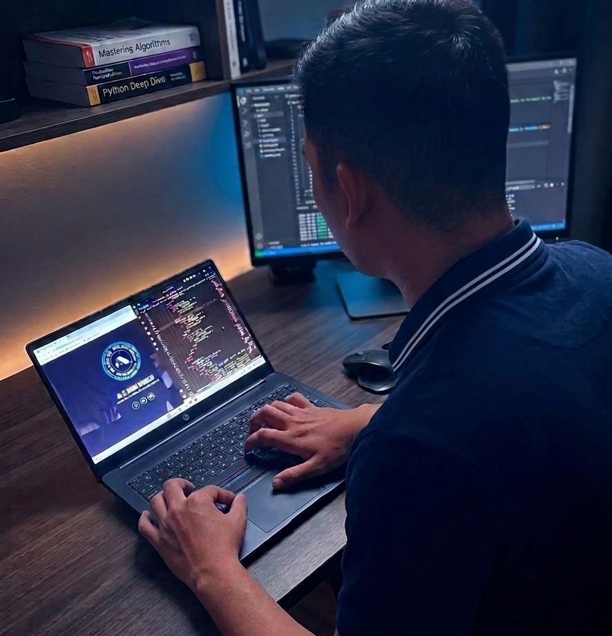
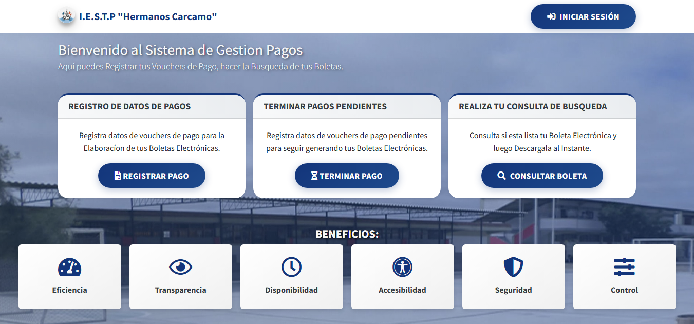
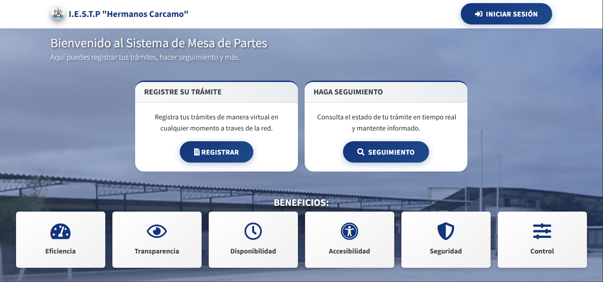
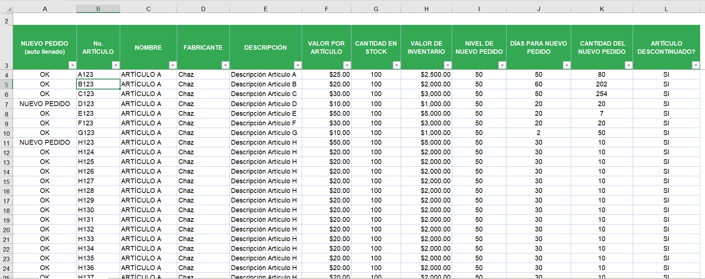

Desarrollo Web a Medida
Aplicaciones web y sitios institucionales con PHP, JavaScript y Bootstrap. Enfoque en rendimiento, UX optimizada y código limpio.
PHP
MySQL
Bootstrap
Técnico en Arquitectura de TI & Desarrollador Web. Ayudo a empresas e instituciones a digitalizar sus procesos, optimizar inventarios tecnológicos y construir plataformas web robustas con PHP, MySQL y tecnologías modernas.
4+
Proyectos completados
1.5+
Años de experiencia
B1
Inglés certificado

Sobre mí
Soy Juan Jefferson Calderón Burgos técnico egresado en Arquitectura de Plataformas y Servicios de TI con sólida formación en desarrollo web, bases de datos y soporte técnico. Una persona dinámica con sed de conocimiento y habilidades prácticas. Adaptabilidad y trabajo en equipo son mis fortalezas.
Emprendedor, proactivo y líder, me destaco por mi responsabilidad, puntualidad y capacidad para resolver problemas colaborativamente. Busco aplicar mis competencias en un entorno dinámico y contribuir al éxito del equipo.
Ubicación
Paita, Piura - Perú
Idiomas
Español · Inglés B1
Teléfono
+51 981 132 139
Habilidades Técnicas
Aptitudes
Currículum
Egresado Técnico en Arquitectura de Plataformas y Servicios de TI, con experiencia en soporte, desarrollo web y gestión de inventarios.
IESTP “Hermanos Cárcamo” - Paita
2021 - 2023
Egresado Técnico, con habilidades en atención al cliente, gestión de inventarios y programación. Me enfoco en mejorar la eficiencia de los procesos y estoy comprometido con el aprendizaje continuo.
IESTP "Hermanos Cárcamo" · NOV 2023 - DIC 2023
Academia de Ciberseguridad "Hacker Mentor" · MAR 2023
Cisco · JUL 2022
Cisco · MAY 2023
Hospital de Apoyo II-1 Nuestra Señora de Las Mercedes - Paita
MAY 2021 - DIC 2021
Hospital de Apoyo II-1 Nuestra Señora de Las Mercedes - Paita
JUN 2022 - OCT 2022
I.E.S.T.P “Hermanos Cárcamo” - Paita
MAY 2024 - SEP 2024
Especialidades
Soluciones tecnológicas integrales para empresas e instituciones que buscan digitalizar sus procesos y potenciar su presencia digital.
Aplicaciones web y sitios institucionales con PHP, JavaScript y Bootstrap. Enfoque en rendimiento, UX optimizada y código limpio.
Diseño de esquemas relacionales, consultas optimizadas y administración de bases de datos MySQL y SQL Server.
Gestión de inventarios tecnológicos, diagnóstico de hardware/software, mantenimiento y asesoría en infraestructura IT.
Implementación de sistemas de Mesa de Partes Virtual, automatización de trámites documentales y optimización de flujos administrativos.
Creación de sitios web atractivos y optimizados para negocios locales, emprendedores y profesionales.
Portafolio
Trabajos reales que he desarrollado para instituciones y clientes locales.
Diseño y desarrollo completo del nuevo sitio web institucional, aplicando mejores prácticas de diseño responsivo y optimización web.

Plataforma para la gestión de tasas académicas, matrículas y emisión de comprobantes electrónicos para educación superior.

Sistema completo de gestión documental con módulos interno y externo. Digitalización de flujos de trámites y seguimiento de expedientes.

Herramienta interna para administración de activos TI (computadoras, impresoras, periféricos) con reportes dinámicos.
Espacio e-learning para la gestión de clases, asignación de tareas y exámenes en línea sincrónicos y asincrónicos.
Plataforma de conexión laboral para estudiantes y empresas aliadas, automatizando el seguimiento del perfil profesional.
Ponte en contacto
¿Tienes un proyecto en mente? Escríbeme y conversemos sobre cómo puedo ayudarte a desarrollar soluciones tecnológicas modernas, escalables y adaptadas a tus necesidades.